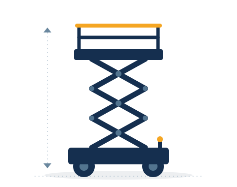

Elektryczny

Podest nożycowy
Nożycowy elektryczny
Cichy i bezemisyjny podest nożycowy do pracy wewnątrz budynków. Stabilna, szeroka platforma sprawdza się przy montażu instalacji, pracach wykończeniowych i serwisowych na halach.
Zasięg roboczy
8–14 m
Napęd
Elektryczny
Typ
Nożycowy
Praca
Wewnątrz
- Hale i magazyny
- Montaż instalacji
- Prace wykończeniowe
- Serwis i konserwacja